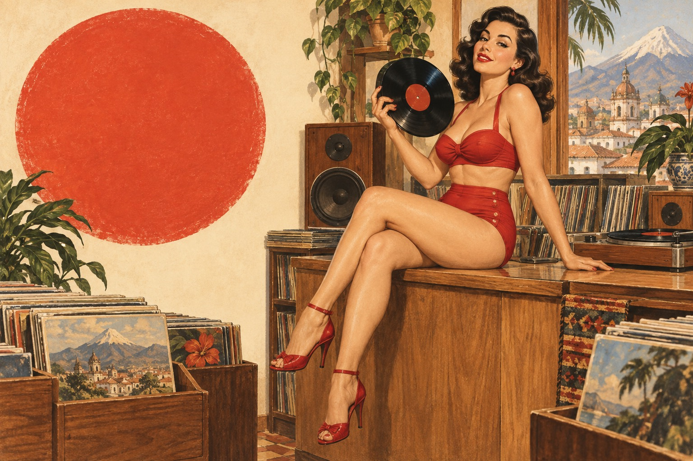

LA VACA LOCA RECORDS PRESENTA
Buenas
noches.
Discos, encuentrosy fechas para recordar.
DE LA VACA
AGENDA / EVENTOS
Las fechas marcadas tienen historia. Toca una para ver el evento.
EventoHoyHECHO PARA SALIR. HECHO PARA ESCUCHAR.